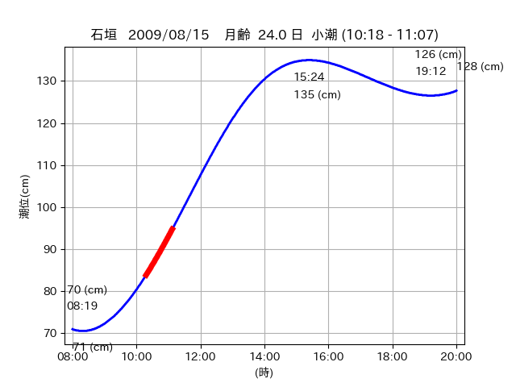

<!DOCTYPE html>
<html>
<head>
    
    <meta http-equiv="content-type" content="text/html; charset=UTF-8" />
    
        <script>
            L_NO_TOUCH = false;
            L_DISABLE_3D = false;
        </script>
    
    <style>html, body {width: 100%;height: 100%;margin: 0;padding: 0;}</style>
    <style>#map {position:absolute;top:0;bottom:0;right:0;left:0;}</style>
    <script src="https://cdn.jsdelivr.net/npm/leaflet@1.9.3/dist/leaflet.js"></script>
    <script src="https://code.jquery.com/jquery-3.7.1.min.js"></script>
    <script src="https://cdn.jsdelivr.net/npm/bootstrap@5.2.2/dist/js/bootstrap.bundle.min.js"></script>
    <script src="https://cdnjs.cloudflare.com/ajax/libs/Leaflet.awesome-markers/2.0.2/leaflet.awesome-markers.js"></script>
    <link rel="stylesheet" href="https://cdn.jsdelivr.net/npm/leaflet@1.9.3/dist/leaflet.css"/>
    <link rel="stylesheet" href="https://cdn.jsdelivr.net/npm/bootstrap@5.2.2/dist/css/bootstrap.min.css"/>
    <link rel="stylesheet" href="https://netdna.bootstrapcdn.com/bootstrap/3.0.0/css/bootstrap-glyphicons.css"/>
    <link rel="stylesheet" href="https://cdn.jsdelivr.net/npm/@fortawesome/fontawesome-free@6.2.0/css/all.min.css"/>
    <link rel="stylesheet" href="https://cdnjs.cloudflare.com/ajax/libs/Leaflet.awesome-markers/2.0.2/leaflet.awesome-markers.css"/>
    <link rel="stylesheet" href="https://cdn.jsdelivr.net/gh/python-visualization/folium/folium/templates/leaflet.awesome.rotate.min.css"/>
    
            <meta name="viewport" content="width=device-width,
                initial-scale=1.0, maximum-scale=1.0, user-scalable=no" />
            <style>
                #map_4fd6448de4b735dec09d19f1e89edd7c {
                    position: relative;
                    width: 2048.0px;
                    height: 1600.0px;
                    left: 0.0%;
                    top: 0.0%;
                }
                .leaflet-container { font-size: 1rem; }
            </style>
        
</head>
<body>
    
    
            <div class="folium-map" id="map_4fd6448de4b735dec09d19f1e89edd7c" ></div>
        
</body>
<script>
    
    
            var map_4fd6448de4b735dec09d19f1e89edd7c = L.map(
                "map_4fd6448de4b735dec09d19f1e89edd7c",
                {
                    center: [24.196, 123.57],
                    crs: L.CRS.EPSG3857,
                    ...{
  "zoom": 12,
  "zoomControl": true,
  "preferCanvas": false,
}

                }
            );

            

        
    
            var tile_layer_76e7bb10632aed4c911852158b756c5a = L.tileLayer(
                "https://cyberjapandata.gsi.go.jp/xyz/seamlessphoto/{z}/{x}/{y}.jpg",
                {
  "minZoom": 0,
  "maxZoom": 18,
  "maxNativeZoom": 18,
  "noWrap": false,
  "attribution": "\u5730\u7406\u9662\u5730\u56f3",
  "subdomains": "abc",
  "detectRetina": false,
  "tms": false,
  "opacity": 1,
}

            );
        
    
            tile_layer_76e7bb10632aed4c911852158b756c5a.addTo(map_4fd6448de4b735dec09d19f1e89edd7c);
        
    
            var marker_ecbd95a1262da04ae8fa7ec22392ada0 = L.marker(
                [24.1941, 123.5713],
                {
}
            ).addTo(map_4fd6448de4b735dec09d19f1e89edd7c);
        
    
            var icon_77c172998e300f8fa26c3a52abac99a3 = L.AwesomeMarkers.icon(
                {
  "markerColor": "orange",
  "iconColor": "white",
  "icon": "info-sign",
  "prefix": "glyphicon",
  "extraClasses": "fa-rotate-0",
}
            );
        
    
        var popup_62e032484b0ce0ab3c43dbea312485d5 = L.popup({
  "maxWidth": "100%",
});

        
            
                var html_a04658495cf7c50c6cef7d15c279d616 = $(`<div id="html_a04658495cf7c50c6cef7d15c279d616" style="width: 100.0%; height: 100.0%;"><table><tr><td></td></tr><tr><td><center>20090815 No.1 </center></table></td></tr></table</div>`)[0];
                popup_62e032484b0ce0ab3c43dbea312485d5.setContent(html_a04658495cf7c50c6cef7d15c279d616);
            
        

        marker_ecbd95a1262da04ae8fa7ec22392ada0.bindPopup(popup_62e032484b0ce0ab3c43dbea312485d5)
        ;

        
    
    
                marker_ecbd95a1262da04ae8fa7ec22392ada0.setIcon(icon_77c172998e300f8fa26c3a52abac99a3);
            
    
            var poly_line_39f63e8ec544b05cd309449ff36f293c = L.polyline(
                [[24.1941, 123.5713], [24.1976, 123.5727]],
                {"bubblingMouseEvents": true, "color": "#FF00FF", "dashArray": null, "dashOffset": null, "fill": false, "fillColor": "#FF00FF", "fillOpacity": 0.2, "fillRule": "evenodd", "lineCap": "round", "lineJoin": "round", "noClip": false, "opacity": 1.0, "smoothFactor": 1.0, "stroke": true, "weight": 3}
            ).addTo(map_4fd6448de4b735dec09d19f1e89edd7c);
        
    
            var marker_afb22e8196a897f879e7eb04535b6dad = L.marker(
                [24.1909, 123.5591],
                {
}
            ).addTo(map_4fd6448de4b735dec09d19f1e89edd7c);
        
    
            var icon_4ad67ba8bcbd07af9e944a35e2bd2291 = L.AwesomeMarkers.icon(
                {
  "markerColor": "orange",
  "iconColor": "white",
  "icon": "info-sign",
  "prefix": "glyphicon",
  "extraClasses": "fa-rotate-0",
}
            );
        
    
        var popup_59db487ee1a499740de4b8fbed62f960 = L.popup({
  "maxWidth": "100%",
});

        
            
                var html_c3cbe8942382f0ceeb87d7b4cf3171d9 = $(`<div id="html_c3cbe8942382f0ceeb87d7b4cf3171d9" style="width: 100.0%; height: 100.0%;"><table><tr><td></td></tr><tr><td><center>20090815 No.2 </center></table></td></tr></table</div>`)[0];
                popup_59db487ee1a499740de4b8fbed62f960.setContent(html_c3cbe8942382f0ceeb87d7b4cf3171d9);
            
        

        marker_afb22e8196a897f879e7eb04535b6dad.bindPopup(popup_59db487ee1a499740de4b8fbed62f960)
        ;

        
    
    
                marker_afb22e8196a897f879e7eb04535b6dad.setIcon(icon_4ad67ba8bcbd07af9e944a35e2bd2291);
            
    
            var poly_line_b750425af4826d00f6da25adcc2f1881 = L.polyline(
                [[24.1909, 123.5591], [24.1944, 123.5497]],
                {"bubblingMouseEvents": true, "color": "#FF00FF", "dashArray": null, "dashOffset": null, "fill": false, "fillColor": "#FF00FF", "fillOpacity": 0.2, "fillRule": "evenodd", "lineCap": "round", "lineJoin": "round", "noClip": false, "opacity": 1.0, "smoothFactor": 1.0, "stroke": true, "weight": 3}
            ).addTo(map_4fd6448de4b735dec09d19f1e89edd7c);
        
    
            var marker_d94b58bff1d0d9b0e08585a0d3173196 = L.marker(
                [24.1972, 123.5674],
                {
}
            ).addTo(map_4fd6448de4b735dec09d19f1e89edd7c);
        
    
            var icon_e471f0d9a19b5f042072531b3971ddfe = L.AwesomeMarkers.icon(
                {
  "markerColor": "orange",
  "iconColor": "white",
  "icon": "info-sign",
  "prefix": "glyphicon",
  "extraClasses": "fa-rotate-0",
}
            );
        
    
        var popup_9ca85a9c9c09cb6a813fdf15b0c193c3 = L.popup({
  "maxWidth": "100%",
});

        
            
                var html_704e1ac38fb350ca54791ba1e2af21cf = $(`<div id="html_704e1ac38fb350ca54791ba1e2af21cf" style="width: 100.0%; height: 100.0%;"><table><tr><td></td></tr><tr><td><center>20090815 No.3 </center></table></td></tr></table</div>`)[0];
                popup_9ca85a9c9c09cb6a813fdf15b0c193c3.setContent(html_704e1ac38fb350ca54791ba1e2af21cf);
            
        

        marker_d94b58bff1d0d9b0e08585a0d3173196.bindPopup(popup_9ca85a9c9c09cb6a813fdf15b0c193c3)
        ;

        
    
    
                marker_d94b58bff1d0d9b0e08585a0d3173196.setIcon(icon_e471f0d9a19b5f042072531b3971ddfe);
            
    
            var poly_line_a2fb5810e9a7a302bc012b47e2b9a1f4 = L.polyline(
                [[24.1972, 123.5674], [24.1948, 123.5727]],
                {"bubblingMouseEvents": true, "color": "#00FFFF", "dashArray": null, "dashOffset": null, "fill": false, "fillColor": "#00FFFF", "fillOpacity": 0.2, "fillRule": "evenodd", "lineCap": "round", "lineJoin": "round", "noClip": false, "opacity": 1.0, "smoothFactor": 1.0, "stroke": true, "weight": 3}
            ).addTo(map_4fd6448de4b735dec09d19f1e89edd7c);
        
</script>
</html>